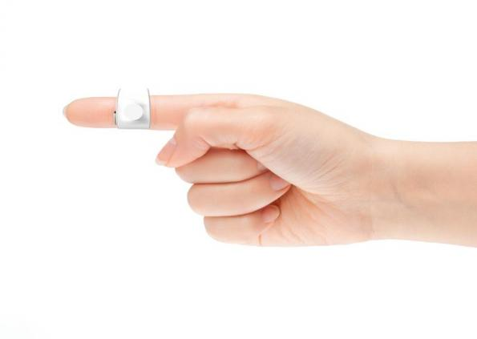
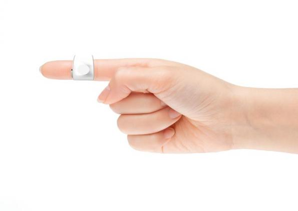

HCI Technologies
HCI Technologies
Topic assignment wearables
Case 1
Als ik een nieuwe manier zou moeten verzinnen om een telefoon als wearable te ontwerpen denk ik snel aan het gebaar wat je maakt als je met je hand een telefoongebaar maakt. Ik heb het dan over hoe je je duim bij je oor houdt en je pink bij je mond, ik dacht eraan om bijvoorbeeld een dun ringetje te maken wat je over je vingertopjes heen schuift waarmee je dan daadwerkelijk kan bellen. Wanneer je telefoon afgaat gaat dan bijvoorbeeld het ringetje om je duim trillen en door je vingers tegen elkaar aan te tikken neem je op, je praat als het ware door je vingers heen. Je zou ook berichten kunnen sturen door aan siri je tekst op te noemen en dat die het uittypt en opstuurt.
Dan is het niet meer nodig om een telefoon mee te nemen en kan je altijd en overal makkelijk opnemen of iemand bellen, het neemt dus geen ruimte in. Het enige wat er nodig is in het apparaat is een speaker en een microfoontje. Daarnaast kan er een sensor worden toegevoegd die of aan de beweging die je maakt doorheft dat je opneemt of een sensor die voelt als de vingers tegen elkaar tikken en op die manier opneemt. Als actuator moet er ook een soort trilling worden gegeven in de duim zodat iemand doorheeft dat hij of zij wordt gebeld. Het ringetje wat je omhebt moet van heel dun materiaal zijn, als het kan voor een groot deel doorzichtig, zodat je vergeet dat je het omhebt. Het moet niet groter zijn dan je vingertopje, en eigenlijk dan zo klein mogelijk.
 

Research
Toen ik op zoek ging naar foto's die mijn concept wat beter konden visualiseren kwam ik terecht bij een heel soortgelijk idee van Nokia, namelijk de Nokia FIT. Dit is een telefoon die om je vinger past, gemaakt van zacht siliconen materiaal. Hierbij gebruiken ze alleen maar de wijsvinger, die je dan tegen je oor aan kan houden wanneer je wilt bellen. Ook kan je notificaties zien van gemiste oproepen of inkomende berichten. Het concept is bedacht door Issam Trabelsi, maar is nooit gerealiseerd. Hieronder is een foto te zien van hoe het eruit zou komen te zien.
Een ander leuk concept wat ik tegenkwam is de GER Moodsweater. Aan de kraag van deze trui is af te lezen in wat voor stemming iemand is, aan de ahnd van kleuren. Door middel van een technologie die Galvanic Skin Response (GSR) heet kan de trui van iemands huid aflezen hoe gespannen hij of zij is, en geeft dat aan met een lichtgevende kraag. Nu hoef je niet meer te vertellen hoe je je voelt maar kunnen mensen precies zien wanneer ze je met rust moeten laten. De trui is bedacht door design lab Sensoree om makkelijker te kunnen communiceren zonder te hoeven praten.
Links:
Nokia FIT artikel Design Swan
Nokia FIT artikel Yanko Design
GER Mood sweater Guardian
GER Mood sweater Sensee
Reflectie
Ik vond het heel lastig om te na te denken over wat voor wearables ik zelf zou kunnen bedenken en ik weet daarom ook niet of ik het beste idee ooit heb bedacht, maar ik vond het wel een leuke uitdaging. Ik merk dat ik snel probeer te denken aan de allerdaagse producten die wij gebruiken zo klein en compact mogelijk te maken, zo ben ik ook op dit concept gekomen. In mijn hoofd geeft dat namelijk snel meer efficiëntie, omdat je dan van alles altijd op zak kan hebben. Het bedenken van materiaal is lastig omdat ik het zo soepel en dun mogelijk materiaal wilde geven maar ik niet zeker wist vanaf wanneer iets dan heel onrealistisch zou worden. Het zou zomaar kunnen dat we straks allemaal een telefoon om onze vinger hebben, en dan hebben we dat allemaal aan mij te danken.